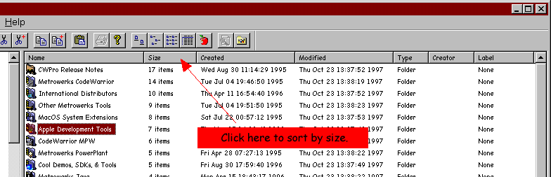
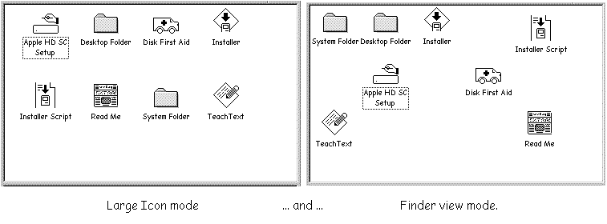

View as large icons
View as small icons
View as list
View details (report)These commands select the appearance of the window content, and are mostly the same as in Windows Explorer. Report view differs somewhat in that it displays some Mac specific columns, that is, type, creator and label.
Click on the column headers to sort according the field; click the same column header again to reverse the sorting direction (ascending/descending).
This view mode is special for HFVExplorer. It displays the items in the same view mode and using same locations that Finder would.
The first time Finder view is selected, HFVExplorer displays the view last used in the Finder, either list, small icons or large icons. If you select Finder view mode again when already in Finder view, a large icon Finder view is forced. (Curiously enough, this was originally a bug in HFVExplorer, but I liked the feature and decided not to fix it.)Refresh (F5 keyboard key):Finder view, unlike the all other modes, also writes back the positions of the icons if you move them around. There is a caveat: if you copy or move files when in Finder mode, the positions are not immediately recorded, but only after you move them again using mouse. This is a security measure since I have yet to come up with a decent automatic icon placement algorithm, something similar or (hopefully) better than found in MacOS Finder.
The repositioning uses Finder "magic rectangles", and requires a MacOS System version 7.1.1 or later to work. Note that Finder relocates items only when it "sees" them; if some application (including Finder itself; i.e. "Recent" folders) has installed new files and you have never opened the window in Finder, the files may be layered on top of each other. HFVExplorer tries to place them "somewhere".
Rebuilds the tree view; refreshes all the volume files and checks the presence of any floppies and CD's.